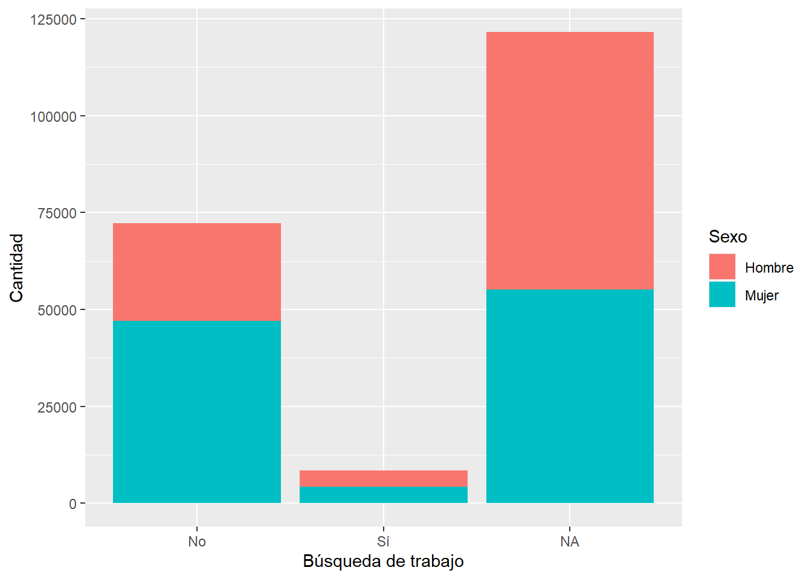

load("C:/Users/alond/Desktop/OFC-R/Trabajo-R-UAH-2024/PRACTICO-R2/input/data/proc_data.RData")La urgencia de mirar hacia las consecuencias: labores de cuidado asignadas desde la colonia a mujeres en América Latina
La urgencia de mirar hacia las consecuencias: labores de cuidado asignadas desde la colonia a mujeres en América Latina
library(pacman)Warning: package 'pacman' was built under R version 4.3.3p_load(dplyr, sjmisc, car, sjlabelled, stargazer, haven, summarytools, kableExtra, sjPlot, corrplot, sessioninfo, ggplot2)En las últimas décadas ha surgido desde el planteamiento de la teoría feminista una serie de demandas que hacen alusión a distintas formas en las que la violencia de género viene a estar presente en la estructura social latinoamericana. Estas formas se expresan en ámbitos políticos, públicos, privados, culturales; es de alguna forma una violencia sistematizada. En particular, este artículo busca profundizar acerca de una de las formas de violencia de género que se expresa en la vida privada y se condice con las labores de cuidado asignadas a las mujeres como un trabajo no remunerado y que viene a instaurarse desde la colonización, cuyas víctimas fueron mujeres indígenas, tal como lo expresa Mendoza en (C. Mendoza and Catalina Valdés Blanchemin 2023), de forma específica:
“el posicionamiento de madres indígenas que debían hacerse cargo de sus hijos mestizos y volverse el pilar fundamental de la familia fue un fenómeno común en toda la región que dejó a la mujer como principal sustento del cuidado familiar y responsable de ese tipo de labores”. (C. Mendoza and Catalina Valdés Blanchemin 2023)
Para efectos de esta investigación, se entenderá que a menor reconocimiento de las labores de cuidado como un trabajo, mayor es el índice de enfermedades desarrolladas por mujeres cuidadoras, a raíz de lo que debe ser entendido como estrés laboral dada la carencia de normas que regulen el espacio de trabajo (el hogar).
Este modelamiento del rol que va a cumplir la mujer en la sociedad latinoamericana va a perpetuar una invisibilización de las labores de cuidado debido a la naturalización y asignación por género del cumplimiento de estos. Asimismo, estas acciones no serán consideradas como un trabajo y por ende no contarán de una remuneración. Es precisamente en este punto donde yace el problema que vamos a investigar: la trascendencia histórica de la asignación de las labores de cuidado hacia las mujeres y sus efectos en la actualidad.
A lo anteriormente expuesto, debemos considerar que las políticas públicas si bien han intentado hacer frente en menor o mayor grado a esta problemática no han sido lo realmente suficiente, y esto puede deberse en gran medida a la doctrina política liberal que viene a separar lo que sucede en la esfera pública de la esfera privada tal como expone (C. Mendoza and Catalina Valdés Blanchemin 2023), siendo un problema relegado al interior de las familias e impidiendo la reivindicación de los derechos del cuidado y los derechos laborales de quienes ejercen estos cuidados.
Al mismo tiempo, las mujeres que se ven envueltas dentro de este fenómeno se ven desprotegidas frente a situaciones de acoso o estrés laboral, pues no existen tales posibilidades de organización de trabajadoras del cuidado como ocurre con otros empleos formalizados y remunerados. Lo anterior ha provocado una precarización de este grupo femenizado que cumple con estas labores que son desempeñadas por mujeres en un 95% de los casos (Manuel Correa Carrasco and Carrasco 2021) efectos, es importante considerar las labores desde una mirada del trabajo, entendiendo así el entorno como un espacio de trabajo, y en general, las condiciones del hogar como las condiciones del trabajo. De esta forma, surge la posibilidad de evaluar los efectos que tiene la invisibilización y la falta de gestión de esta labor desde la esfera pública. Pues, se expone un alto nivel de estrés laboral, asociado a conductas denigrantes que las trabajadoras domésticas sufren debido a la vulnerabilidad que impone el contexto (Manuel Correa Carrasco and Carrasco 2021). Es decir, que surge una precariedad del empleo que exige ser enfrentada bajo la influencia de la esfera pública y política en la regularización, reconocimiento y redistribución de las tareas domésticas como un trabajo.
Por otra parte, debe considerarse el cuidado de adultos mayores como parte de una labor doméstica que recae en las mujeres, mayoritariamente. Si bien han surgido distintas instancias de creación de programas al fomento del resguardo de la salud para adultos mayores desde los inicios de los 2000’s, según se indica en la agenda (Nicole Bidegain Ponte and Ponte 2017), donde se exponen distintos parámetros para el resguardo de la salud de adultos mayores, nuevamente quedan exentas las personas cuya responsabilidad social es asumir el acompañamiento y el cuidado de estas personas en distintos niveles de dependencia.
En último lugar, cabe recalcar que con frecuencia que la realidad de los hogares donde deben ejercerse roles de cuidado tienden a presentar bajos recursos económicos (Alicia Bárcena and Alicia Bárcena 2021) de modo que, en caso de hogares monoparentales sostenidos por mujeres, la carga pasa a duplicarse, empeorando las condiciones. Por otra parte, las políticas impulsadas por la inserción laboral al grupo de mujeres bajo la misión de una autonomía económica, esconde detrás las mayores cargas de trabajo dadas las condiciones expuestas con anterioridad a las que se ven enfrentadas las mujeres que cumplirían esta doble labor.
En último lugar, lo que se busca llevar a cabo con esta investigación es la visibilización de un fenómeno precarizador de la vida de las trabajadoras del cuidado. Lo anterior da cuenta de la urgencia que tiene el desarrollo de políticas y programas de intervención con el propósito de regularizar y reconocer esta labor, pues, es finalmente desde la esfera pública que los efectos de esta problemática pueden transformarse, y ayudar a disminuir los níveles de depresión, estrés u otras enfermedades que pueden derivarse por las condiciones del trabajo de cuidados.
Para lograr llevar a cabo un análisis sustentado de el tema propuesto, se presentará la siguiente tabla que trabaja con una base la base de datos CASEN 2022. En la tabla encontramos datos que sustentan que la búsqueda de trabajo suele verse impedida por las labores de cuidado y por el trabajo doméstico de manera tendenciosa en el grupo de mujeres. Esto se debe a una femeneización del trabajo doméstico acorde a las revisiones realizzadas anteriormente en la asginación de roles y estereotipos de género. Pues, la tabla nos muestra que mientras un grupo de 280 hombres reconocen dedicarse al trabajo doméstico, 7255 mujeres declaran hacerlo y por esta razón que no han buscado trabajo. Es decir, tan sólo el 3% de hombres se dedican al trabajo doméstico en relación a las mujeres.
tabla <- sjt.xtab(proc_data$razon, proc_data$sexo, encoding = "UTF-8")
tabla| o7. ¿Cuál es la razón por la que no buscó trabajo en las últimas 4 semanas? |
sexo | Total | |
|---|---|---|---|
| Hombre | Mujer | ||
| 0 | 313 | 1602 | 1915 |
| Está en espera de una confirmación |
252 | 220 | 472 |
| 12540 | 18234 | 30774 | |
| Se dedica a labores de cuidado |
130 | 6075 | 6205 |
| Dificultades para conseguir trabajo |
3486 | 5412 | 8898 |
| Se dedica al trabajo doméstico |
280 | 7255 | 7535 |
| Otro motivo | 7894 | 8085 | 15979 |
| 16 | 220 | 216 | 436 |
| Total | 25115 | 47099 | 72214 |
| χ2=9114.935 · df=18 · Cramer's V=0.355 · p=0.000 | |||
Además, el siguiente gráfico nos proporciona información para sustentar este fenómeno en la medida que las mujeres corresponde al grupo con menor recurrencia a buscar un trabajo. Siendo quienes buscan un trabajo con menor recurrencia en al menos un 25% de los casos en relación a los hombres.
graph3 <- proc_data %>% ggplot(aes(x = busc_trab, fill = sexo)) +
geom_bar() +
xlab("Búsqueda de trabajo") +
ylab("Cantidad") +
labs(fill = "Sexo") +
scale_fill_discrete(labels = c('Hombre', 'Mujer'))
graph3
References
Alicia Bárcena, and Alicia Bárcena. 2021. “La Autonomía Económica de Las Mujeres Para Una Recuperación Transformadora Con Igualdad En América Latina y El Caribe.” ICE, Revista de Economía, no. 921 (August): 23–35. https://doi.org/10.32796/ice.2021.921.7264.
C. Mendoza, and Catalina Valdés Blanchemin. 2023. “Liberalismo, Conservadurismo y Feminismo: Perspectivas Teóricas Sobre El Cuidado En América Latina.” Revista Ethika+, no. 7 (April): 91–117. https://doi.org/10.5354/2452-6037.2023.69418.
Manuel Correa Carrasco, and Manuel Correa Carrasco. 2021. “Los Riesgos Psicosociales En El Trabajo Doméstico y de Cuidados” 11 (1): 431–48. https://doi.org/10.46661/lexsocial.5493.
Nicole Bidegain Ponte, and Nicole Bidegain Ponte. 2017. “La Agenda 2030 y La Agenda Regional de Género: Sinergias Para La Igualdad En América Latina y El Caribe,” May.